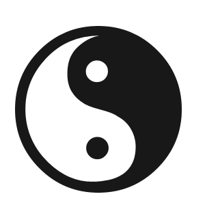

<!DOCTYPE html>
<html>
	<head>
		<meta charset="UTF-8">
		<title>旋转相册</title>
		<link rel="stylesheet" type="text/css" href="css/reset.css" />
		<style type="text/css">
			body{
				height: 100%;
				background: url(images/timg2.gif);
				/*perspective:1000px;*/
			}
			#all{
				/*perspective:9000px;*/
				width: 280px;
				height: 400px;
				position: fixed;
				left: 0;
				right: 0;
				top:0;
				bottom: 0;
				margin: auto;
				transform-style: preserve-3d;
				animation: gosky 30s linear infinite;
			}
			#all img{
				width: 280px;
				height: 400px;
				position: absolute;
				left: 0;
				top: 0;
			}
			#all img:nth-child(1){
				transform:rotateY(0deg) translateZ(600px);
				/*animation: go 5s linear;*/
			}
			#all img:nth-child(2){
				transform:rotateY(36deg) translateZ(600px);
			}
			#all img:nth-child(3){
				transform:rotateY(72deg) translateZ(600px);
			}
			#all img:nth-child(4){
				transform:rotateY(108deg) translateZ(600px);
			}
			#all img:nth-child(5){
				transform:rotateY(144deg) translateZ(600px);
			}
			#all img:nth-child(6){
				transform:rotateY(180deg) translateZ(600px);
			}
			#all img:nth-child(7){
				transform:rotateY(216deg) translateZ(600px);
			}
			#all img:nth-child(8){
				transform:rotateY(252deg) translateZ(600px);
			}
			#all img:nth-child(9){
				transform:rotateY(288deg) translateZ(600px);
			}
			#all img:nth-child(10){
				transform:rotateY(324deg) translateZ(600px);
			}
			#all img:first-child:hover{
				/*animation: go 5s linear;*/
			}
			 .taiji{
				position: fixed;
				right: 0;
				bottom: 0;
			}
			/*@-webkit-keyframes go{
				10%{transform: translateZ(-200px);}
			}*/
			@-webkit-keyframes gosky{
				0%{
					transform: rotateX(20deg) rotateY(0deg);
				}
				10%{
					transform: rotateX(0deg) rotateY(180deg);
				}
				20%{
					transform: rotateX(-20deg) rotateY(360deg);
				}
				30%{
					transform: rotateX(0deg) rotateY(480deg);
				}
				40%{
					transform: rotateX(20deg) rotateY(760deg);
				}
				50%{
					transform: rotateX(0deg) rotateY(940deg);
				}
				60%{
					transform: rotateX(-20deg) rotateY(1120deg);
				}
				70%{
					transform: rotateX(0deg) rotateY(1300deg);
				}
				80%{
					transform: rotateX(20deg) rotateY(1480deg);
				}
				90%{
					transform: rotateX(0deg) rotateY(1660deg);
				}
				100%{
					transform: rotateX(20deg) rotateY(1840deg);
				}	
			}
		</style>
	</head>
	<body>
		<div id="all">
			
			
			
			
			
			
			
			
			
			
			<audio src="audio/kenan.mp3" autoplay loop></audio>
			
		</div>
		<!---->
	</body>
</html>
